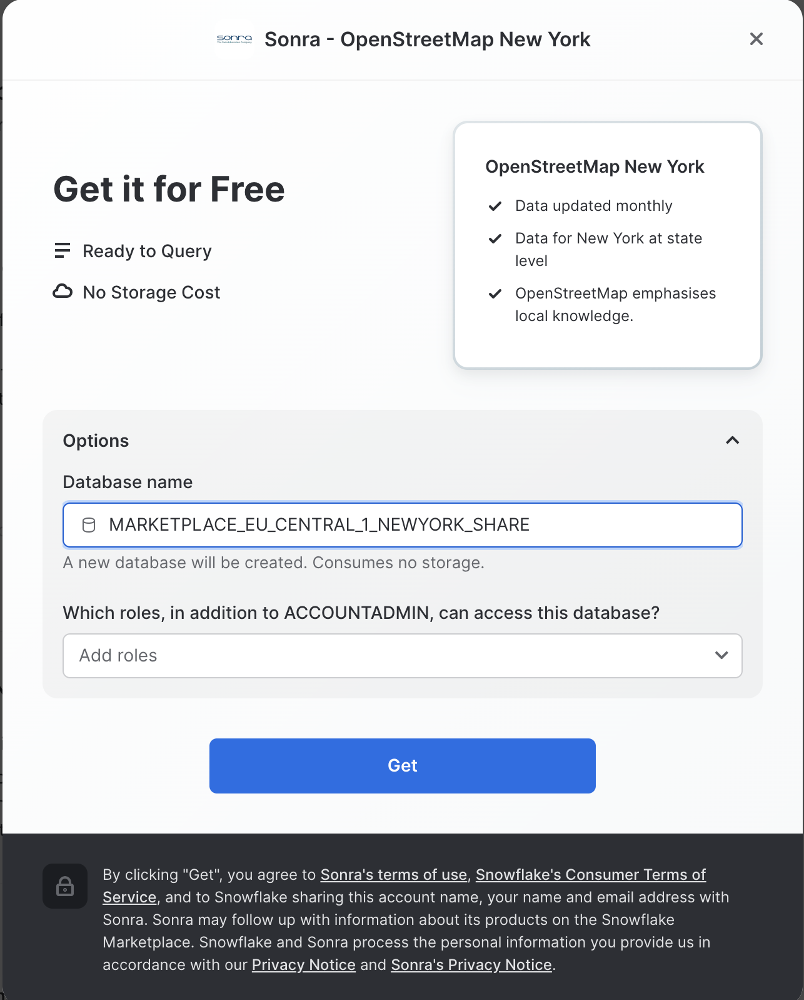
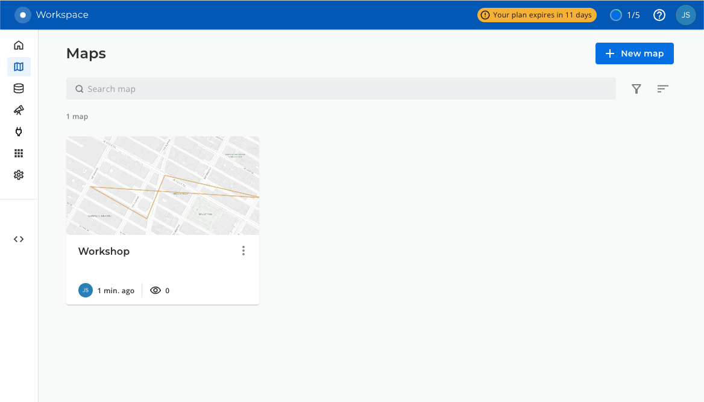
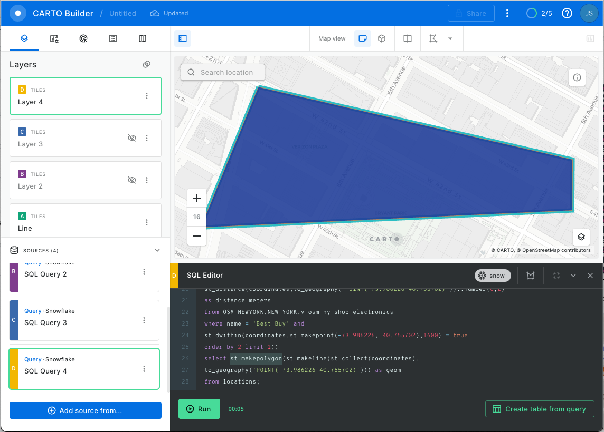

Geospatial query capabilities in Snowflake are built upon a combination of data types and specialized query functions that can be used to parse, construct, and run calculations over geospatial objects. This guide will introduce you to the GEOGRAPHY data type, help you understand geospatial formats supported by Snowflake, walk you through the use of a variety of functions on a sample geospatial data set from the Snowflake Marketplace, and show you how to analyze and visualize your Snowflake data using CARTO's Analytics Toolbox.

Prerequisites
- Quick Video Introduction to Snowflake
- Snowflake Data Loading Basics Video
- CARTO in a nutshell web guide
- CARTO Spatial Extension for Snowflake video
What You'll Learn
- how to acquire geospatial data from the Snowflake Marketplace
- how to interpret the
GEOGRAPHYdata type - how to understand the different formats that
GEOGRAPHYcan be expressed in - how to unload/load geospatial data
- how to use parser, constructor, and calculation geospatial functions in queries
- how to perform geospatial joins
What You'll Need
- A supported Snowflake Browser
- Sign-up for a Snowflake Trial OR have access to an existing Snowflake account with the
ACCOUNTADMINrole or theIMPORT SHAREprivilege. Pick the Enterprise edition to try - Search Optimization for Geospatial.
- Sign-up for a CARTO Trial (OR have access to an existing CARTO account )
What You'll Build
- A sample use case that involves points-of-interest in New York City.

The first step in the guide is to acquire a geospatial data set that you can freely use to explore the basics of Snowflake's geospatial functionality. The best place to acquire this data is the Snowflake Marketplace!
We will also be accessing another asset from the Snowflake Marketplace: The CARTO Analytics Toolbox - a composed set of user-defined functions that extend the geospatial capabilities of Snowflake. The listing gives you access to Open Source modules supporting different spatial indexes and other operations: quadkeys, H3, S2, placekey, geometry constructors, accessors, transformations, etc.
Access Snowflake's Web UI
If this is the first time you are logging into the Snowflake UI, you will be prompted to enter your account name or account URL that you were given when you acquired a trial. The account URL contains your account name and potentially the region. You can find your account URL in the email that was sent to you after you signed up for the trial.
Click Sign-in and you will be prompted for your user name and password.
Increase Your Account Permission
The Snowflake web interface has a lot to offer, but for now, switch your current role from the default SYSADMIN to ACCOUNTADMIN. This increase in permissions will allow you to create shared databases from Snowflake Marketplace listings.

Create a Virtual Warehouse (if needed)
If you don't already have access to a Virtual Warehouse to run queries, you will need to create one.
- Navigate to the
Admin > Warehousesscreen using the menu on the left side of the window - Click the big blue
+ Warehousebutton in the upper right of the window - Create an X-Small Warehouse as shown in the screen below

Be sure to change the Suspend After (min) field to 1 min to avoid wasting compute credits.
Acquire Data from the Snowflake Marketplace
Now you can acquire sample geospatial data from the Snowflake Marketplace.
- Navigate to the
Marketplacescreen using the menu on the left side of the window - Search for
OpenStreetMap New Yorkin the search bar - Find and click the
Sonra OpenStreetMap New Yorktile

- Once in the listing, click the big blue
Getbutton

- On the
Get Datascreen, change the name of the database from the default toOSM_NEWYORK, as this name is shorter and all of the future instructions will assume this name for the database.

Congratulations! You have just created a shared database from a listing on the Snowflake Marketplace.
Install CARTO Analytics Toolbox from the Snowflake Marketplace
Now you can acquire CARTO's Analytics Toolbox from the Snowflake Marketplace. This will share UDFs (User defined functions) to your account that will allow you to perform even more geospatial analytics.
- Similar to how you did with the data in the previous steps, navigate to the Marketplace screen using the menu on the left side of the window

- Search for
CARTOin the search bar - Find and click the
Analytics Toolboxtile

Click on big blue Get button In the options, name the database CARTO and optionally add more roles that can access the database

- Click on
Getand thenDone.
Congratulations! Now you have data and the analytics toolbox!
Let's connect your Snowflake to CARTO so you can run and visualize the queries in the following exercises of this workshop.
Access the CARTO Workspace: app.carto.com
Connection to Snowflake
Go to the Connections section in the Workspace, where you can find the list of all your current connections.

To add a new connection, click on New connection and follow these steps:
- Select Snowflake.
- Click the
Setup connectionbutton. - Enter the connection parameters and credentials.
These are the parameters you need to provide:
- Name for your connection: You can register different connections with the Snowflake connector. You can use the name to identify the connections.
- Username: Name of the user account.
- Password: Password for the user account.
- Account: Hostname for your account . One way to get it is to check the Snowflake activation email which contains the account_name within the URL ( <account_name>.snowflakecomputing.com ). Just enter what's on the account_name, i.e ok36557.us-east-2.aws
- Warehouse (optional): Default warehouse that will run your queries. Use MY_WH.
- Database (optional). Default database to run your queries. Leave Blank.
- Role (optional). Default Role to run your queries. Use ACCOUNTADMIN.

Once you have entered the parameters, you can click the Connect button. CARTO will try to connect to your Snowflake account. If everything is OK, your new connection will be registered.
Now we will run different queries to understand how the GEOGRAPHY data type works in Snowflake. Navigate to the query editor by clicking on Worksheets on the top left navigation bar.
Open a New Worksheet and Choose Your Warehouse
- Click the + Worksheet button in the upper right of your browser window. This will open a new window.
- In the new Window, make sure
ACCOUNTADMINandMY_WH(or whatever your warehouse is named) are selected in the upper right of your browser window.

- In the object browser on the left, select Databases tab and expand the
OSM_NEWYORKdatabase, theNEW_YORKschema, and theViewsgrouping to see the various views that you have access to in this shared database. The data provider has chosen to share only database views in this listing. You will use some of these views throughout the guide.

Now you are ready to run some queries.
The GEOGRAPHY data type
Snowflake's GEOGRAPHY data type is similar to the GEOGRAPHY data type in other geospatial databases in that it treats all points as longitude and latitude on a spherical earth instead of a flat plane. This is an important distinction from other geospatial types (such as GEOMETRY), but this guide won't be exploring those distinctions. More information about Snowflake's specification can be found here.
Look at one of the views in the shared database which has a GEOGRAPHY column by running the following queries. Copy & paste the SQL below into your worksheet editor, put your cursor somewhere in the text of the query you want to run (usually the beginning or end), and either click the blue "Play" button in the upper right of your browser window, or press CTRL+Enter or CMD+Enter (Windows or Mac) to run the query.
// Set the working database schema
use schema osm_newyork.new_york;
The use schema command sets the active database.schema for your future queries so you do not have to fully qualify your objects.
// Describe the v_osm_ny_shop_electronics view
desc view v_osm_ny_shop_electronics;
The desc or describe command shows you the definition of the view, including the columns, their data type, and other relevant details. Notice the coordinates column is defined of GEOGRAPHY type. This is the column you will focus on in the next steps.
View GEOGRAPHY Output Formats
Snowflake supports 3 primary geospatial formats and 2 additional variations on those formats. They are:
- GeoJSON: a JSON-based standard for representing geospatial data
- WKT & EWKT: a "Well Known Text" string format for representing geospatial data and the "Extended" variation of that format
- WKB & EWKB: a "Well Known Binary" format for representing geospatial data in binary and the "Extended" variation of that format
These formats are supported for ingestion (files containing those formats can be loaded into a GEOGRAPHY typed column), query result display, and data unloading to new files. You don't need to worry about how Snowflake stores the data under the covers, but rather how the data is displayed to you or unloaded to files through the value of a session variable called GEOGRAPHY_OUTPUT_FORMAT.
Run the query below to make sure the current format is GeoJSON.
// Set the output format to GeoJSON
alter session set geography_output_format = 'GEOJSON';
The alter session command lets you set a parameter for your current user session, which in this case is the GEOGRAPHY_OUTPUT_FORMAT. The default value for this parameter is 'GEOJSON', so normally you wouldn't have to run this command if you want that format, but this guide wants to be certain the next queries are run with the 'GEOJSON' output.
Now run the following query against the V_OSM_NY_SHOP_ELECTRONICS view.
// Query the v_osm_ny_shop_electronics view for rows of type 'node' (long/lat points)
select coordinates, name from OSM_NEWYORK.NEW_YORK.v_osm_ny_shop_electronics where type = 'node' limit 25;
In the result set, notice the coordinates column and how it displays a JSON representation of a point. It should look something like this:
{ "coordinates": [ -7.390351649999999e+01, 4.074499730000000e+01 ], "type": "Point" }
If you click on a cell in the coordinates column of the query result, the JSON representation will also show in the cell panel on the right side of the query window, and it includes a button that allows you to copy that JSON text (see screenshot below). You will use this capability in later exercises.

Now run the next query.
// Query the v_osm_ny_shop_electronics view for rows of type 'way' (a collection of many points)
select coordinates, name from OSM_NEWYORK.NEW_YORK.v_osm_ny_shop_electronics where type = 'way' limit 25;
Click on a cell in the coordinates column of the query result. Notice in the cell panel how the JSON is expanded with many more points in the JSON array. This shows you the difference between a geospatial representation of a single point, vs a representation of many points.
Now look at the same queries but in a different format. Run the following query:
// Set the output format to WKT
alter session set geography_output_format = 'WKT';
Run the previous two queries again. With each run, click on a cell in the coordinates column and examine the output.
select coordinates, name from OSM_NEWYORK.NEW_YORK.v_osm_ny_shop_electronics where type = 'node' limit 25;
select coordinates, name from OSM_NEWYORK.NEW_YORK.v_osm_ny_shop_electronics where type = 'way' limit 25;
WKT looks different than GeoJSON, and is arguably more readable. Here you can more clearly see the geospatial object types which are represented below in the example output:
// An example of a POINT
POINT(-74.0266511 40.6346599)
// An example of a POLYGON
POLYGON((-74.339971 43.0631175,-74.3397734 43.0631363,-74.3397902 43.0632306,-74.3399878 43.0632117,-74.339971 43.0631175))
Lastly, look at WKB output. Run the following query:
// Set the output format to WKB
alter session set geography_output_format = 'WKB';
And run the two queries again, click on a cell in the coordinates column each time.
select coordinates, name from OSM_NEWYORK.NEW_YORK.v_osm_ny_shop_electronics where type = 'node' limit 25;
select coordinates, name from OSM_NEWYORK.NEW_YORK.v_osm_ny_shop_electronics where type = 'way' limit 25;
Notice how WKB is incomprehensible to a human reader. Other than the length of the binary value, it's hard to tell the difference between the POINT and the POLYGON. However, this format is handy in data loading/unloading, as you'll see in the next section.
Now that you understand the different output formats, you can create new files from the electronics view, then load those files into new tables with the GEOGRAPHY data type. You will also encounter your first examples of geospatial parsers and constructors.
Create New WKB Files From Queries
In this step we're going to use Snowflake's COPY into location feature to take the output of a query and create a file in your local user stage. Because your output format is set to WKB, the geospatial column in that table will be represented in the WKB format in the new files.
Make sure we're using the WKB output format by running this query again:
alter session set geography_output_format = 'WKB';
If you're not familiar with the anatomy of a COPY command, the code comments below will break down the code of the first query, which copies a few columns and all rows from the electronics view:
// Define the write location (@~/ = my user stage) and file name for the file
copy into @~/osm_ny_shop_electronics_all.csv
// Define the query that represents the data output
from (select id,coordinates,name,type from OSM_NEWYORK.NEW_YORK.v_osm_ny_shop_electronics )
// Indicate the comma-delimited file format and tell it to double-quote strings
file_format=(type=csv field_optionally_enclosed_by='"')
// Tell Snowflake to write one file and overwrite it if it already exists
single=true overwrite=true;
Run the query above and you should see an output that indicates the number of rows that were unloaded.
Run the second unload query below, which adds some filtering to the output query and a parser:
copy into @~/osm_ny_shop_electronics_points.csv
from (
select id,coordinates,name,type,st_x(coordinates),st_y(coordinates)
from OSM_NEWYORK.NEW_YORK.v_osm_ny_shop_electronics where type='node'
) file_format=(type=csv field_optionally_enclosed_by='"')
single=true overwrite=true;
In this query, the parsers ST_X and ST_Y are extracting the longitude and latitude from a GEOGRAPHY POINT object. These parsers only accept single points as an input, so you had to filter the query on type = 'node'. In Snowflake, the ‘x' coordinate is always the longitude and the ‘y' coordinate is always the latitude, and as you will see in a future constructor, the longitude is always listed first.
LIST and Query User Staged Files
You should now have 2 files in your user stage. Verify they are there by running the list command. The ‘osm' string will act as a filter to tell the command to show only the files beginning with ‘osm'.
list @~/osm;
You can query a simple file directly in the stage by using the ‘$' notation below to represent each delimited column in the file, which in this case Snowflake assumes to be a comma-delimited CSV. Run this query:
select $1,$2,$3,$4 from @~/osm_ny_shop_electronics_all.csv;
Notice how the second column displays the WKB geospatial data in double-quotes because of how you created the file. This will not load directly into a GEOGRAPHY data type, so you need to further define the file format. Run each query below to create a local database and a new file format in that database. You will also switch your GEOGRAPHY output format back to WKT to improve readability of future queries.
// Create a new local database
create or replace database geocodelab;
// Change your working schema to the public schema in that database
use schema geocodelab.public;
// Create a new file format in that schema
create or replace file format geocsv type = 'csv' field_optionally_enclosed_by='"';
// Set the output format back to WKT
alter session set geography_output_format = 'WKT';
Now query the ‘all' files in the stage using the file format:
select $1,TO_GEOGRAPHY($2),$3,$4
from @~/osm_ny_shop_electronics_all.csv
(file_format => 'geocsv');
Notice the use of the TO_GEOGRAPHY constructor which tells Snowflake to interpret the WKB binary string as geospatial data and construct a GEOGRAPHY type. The WKT output format allows you to see this representation in a more readable form. You can now load this file into a table that includes a GEOGRAPHY typed column by running the two queries below:
// Create a new 'all' table in the current schema
create or replace table electronics_all
(id number, coordinates geography, name string, type string);
// Load the 'all' file into the table
copy into electronics_all from @~/osm_ny_shop_electronics_all.csv
file_format=(format_name='geocsv');
You should see all rows loaded successfully into the table with 0 errors seen.
Now turn your attention to the other ‘points' file. If you recall, you used ST_X and ST_Y to make discrete longitude and latitude columns in this file. It is not uncommon to receive data which contains these values in different columns, and you can use the ST_MAKEPOINT constructor to combine two discrete longitude and latitude columns into one GEOGRAPHY typed column. Run this query:
select $1,ST_MAKEPOINT($5,$6),$3,$4,$5,$6
from @~/osm_ny_shop_electronics_points.csv
(file_format => 'geocsv');
Now create a table and load the ‘points' file into that table. Run these two queries.
// Create a new 'points' table in the current schema
create or replace table electronics_points
(id number, coordinates geography, name string, type string,
long number(38,7), lat number(38,7));
// Load the 'points' file into the table
copy into electronics_points from (
select $1,ST_MAKEPOINT($5,$6),$3,$4,$5,$6
from @~/osm_ny_shop_electronics_points.csv
) file_format=(format_name='geocsv');
You should see all rows loaded successfully into the table with 0 errors seen.
To conclude this section, you can query your recently loaded tables using the two queries below:
select * from electronics_all;
select * from electronics_points;
Now that you have the basic understand of how the GEOGRAPHY data type works and what a geospatial representation of data looks like in various output formats, it's time to walkthrough a scenario that requires you to run and visualize geospatial queries to answer some questions.
Before you begin the scenario, switch the active schema back to the shared database and make sure the output format is either GeoJSON or WKT, as you will be using another website (i.e CARTO) to visualize the query results. Which output you choose will be based on your personal preference - WKT is easier for the casual person to read, while GeoJSON is arguably more common. When querying from CARTO the default (GEOJSON) will be used so no need to worry about changing it from that context.
Also note that from here on out, SQL statements and functions that have been previously covered will no longer have their usage explained in the code comments or the text of the guide. Run the two queries below:
use schema osm_newyork.new_york;
// Run just one of the below queries based on your preference
alter session set geography_output_format = 'GEOJSON';
alter session set geography_output_format = 'WKT';
The Scenario
Pretend that you are currently living in your apartment near Times Square in New York City. You need to make a shopping run to Best Buy and the liquor store, as well as grab a coffee at a coffee shop. Based on your current location, what are the closest stores or shops to do these errands, and are they the most optimal locations to go to collectively? Are there other shops you could stop at along the way?
Start with running a query that represents your current location. This location has been preselected for the guide using a website that returns longitude and latitude when you click on a location on a map. Run this query in the Snowlake editor:
select to_geography('POINT(-73.986226 40.755702)');
Notice there is no from clause in this query, which allows you to construct a GEOGRAPHY object in a simple select statement.
Now let's do the query in CARTO Builder to see where the point is.
- Create a new map. Use a the navigation menu on the left to got to Maps and then click on (+) New Map).

- Click on the "Add Source From"

- Then click on
Custom Queryand make sure you have selected Snowflake Connection that you have created in previous steps.

- Now paste the query and click on the green
Runbutton.
select to_geography('POINT(-73.986226 40.755702)') as geom;
- Use the map zoom controls (+/- buttons) and click the zoom in )+) button until you can see the point better. You should see something like the screenshot below, though you may see more depending on your browser window size.

The green dot represents the POINT object location. Now you know where you are!

Find the Closest Locations
In the next step, you are going to run queries to find the closest Best Buy, liquor store, and coffee shop to your current location from above. These queries are very similar and will do several things:
- One will query the electronics view, the other two will query the food & beverages view, applying appropriate filters to find the thing we're looking for.
- All queries will use the
ST_DWITHINfunction in thewhereclause to filter out stores that aren't within the stated distance. The function takes two points and a distance to determine whether those two points are less than or equal to the stated distance from each other, returningtrueif they are andfalseif they are not. In this function, you will use thecoordinatescolumn from each view to scan through all of the Best Buys, liquor stores, or coffee shops and compare them to your current locationPOINT, which you will construct using the previously usedST_MAKEPOINT. You will then use 1600 meters for the distance value, which is roughly equivalent to a US mile. - Note that in the queries below, the syntax
ST_DWITHIN(...) = trueis used for readability, but the= trueis not required for the filter to work. It is required if you were to need an= falsecondition. - All queries will also use the
ST_DISTANCEfunction, which actually gives you a value in meters representing the distance between the two points. When combined withorder byandlimitclauses, this will help you return only the row that is the smallest distance, or closest. - Also note in
ST_DISTANCEthat you use the constructorTO_GEOGRAPHYfor your current location point instead of theST_MAKEPOINTconstructor that you used earlier inST_DWITHIN. This is to show you that thatTO_GEOGRAPHYis a general purpose constructor whereST_MAKEPOINTspecifically makes aPOINTobject, but in this situation they resolve to the same output. Sometimes there is more than one valid approach to construct a geospatial object.
Run the following queries (the first one has comments similar to above):
// Find the closest Best Buy
select id, coordinates as geom, name, addr_housenumber, addr_street,
// Use st_distance to calculate the distance between your location and Best Buy
st_distance(coordinates,to_geography('POINT(-73.986226 40.755702)'))::number(6,2)
as distance_meters
from OSM_NEWYORK.NEW_YORK.v_osm_ny_shop_electronics
// Filter just for Best Buys
where name = 'Best Buy' and
// Filter for Best Buys that are within about a US mile (1600 meters)
st_dwithin(coordinates,st_makepoint(-73.986226, 40.755702),1600) = true
// Order the results by the calculated distance and only return the lowest
order by 6 limit 1;
// Find the closest liquor store
select id, coordinates as geom, name, addr_housenumber, addr_street,
st_distance(geom,to_geography('POINT(-73.986226 40.755702)'))::number(6,2)
as distance_meters
from OSM_NEWYORK.NEW_YORK.v_osm_ny_shop_food_beverages
where shop = 'alcohol' and
st_dwithin(coordinates,st_makepoint(-73.986226, 40.755702),1600) = true
order by 6 limit 1;
// Find the closest coffee shop
select id, coordinates as geom, name, addr_housenumber, addr_street,
st_distance(coordinates,to_geography('POINT(-73.986226 40.755702)'))::number(6,2)
as distance_meters
from OSM_NEWYORK.NEW_YORK.v_osm_ny_shop_food_beverages
where shop = 'coffee' and
st_dwithin(coordinates,st_makepoint(-73.986226, 40.755702),1600) = true
order by 6 limit 1;
In each case, the query returns a POINT object, which you aren't going to do anything with just yet, but now you have the queries that return the desired results. It would be really nice, however, if you could easily visualize how these points relate to each other.
Collect Points Into a Line
In the next step of this section, you're going to ‘collect' the points using ST_COLLECT and make a LINESTRING object with the ST_MAKELINE constructor. You will then be able to visualize this line on CARTO.
- The first step in the query to is create a common table expression (CTE) query that unions together the queries you ran in the above step (keeping just the
coordinatesanddistance_meterscolumns). This CTE will result in a 4 row output - 1 row for your current location, 1 row for the Best Buy location, 1 row for the liquor store, and 1 row for the coffee shop. - You will then use
ST_COLLECTto aggregate those 4 rows in thecoordinatescolumn into a single geospatial object, aMULTIPOINT. This object type is a collection ofPOINTobjects that are interpreted as having no connection to each other other than they are grouped. A visualization tool will not connect these points, just plot them, so in the next step you'll turn these points into a line. - Finally you need to do is convert that
MULTIPOINTobject into aLINESTRINGobject usingST_MAKELINE, which takes a set of points as an input and turns them into aLINESTRINGobject. Whereas aMULTIPOINThas points with no assumed connection, the points in aLINESTRINGwill be interpreted as connected in the order they appear. Needing a collection of points to feed intoST_MAKELINEis the reason why you did theST_COLLECTstep above, and the only thing you need to do to the query above is wrap theST_COLLECTin anST_LINESTRINGlike so:
Run this query and examine the output:
// Create the CTE 'locations'
with locations as (
(select to_geography('POINT(-73.986226 40.755702)') as coordinates,
0 as distance_meters)
union all
(select coordinates as geom,
st_distance(coordinates,to_geography('POINT(-73.986226 40.755702)'))::number(6,2)
as distance_meters from OSM_NEWYORK.NEW_YORK.v_osm_ny_shop_electronics
where name = 'Best Buy' and
st_dwithin(coordinates,st_makepoint(-73.986226, 40.755702),1600) = true
order by 2 limit 1)
union all
(select coordinates as geom,
st_distance(coordinates,to_geography('POINT(-73.986226 40.755702)'))::number(6,2)
as distance_meters from OSM_NEWYORK.NEW_YORK.v_osm_ny_shop_food_beverages
where shop = 'alcohol' and
st_dwithin(coordinates,st_makepoint(-73.986226, 40.755702),1600) = true
order by 2 limit 1)
union all
(select coordinates as geom,
st_distance(coordinates,to_geography('POINT(-73.986226 40.755702)'))::number(6,2)
as distance_meters from OSM_NEWYORK.NEW_YORK.v_osm_ny_shop_food_beverages
where shop = 'coffee' and
st_dwithin(coordinates,st_makepoint(-73.986226, 40.755702),1600) = true
order by 2 limit 1))
// Query the CTE result set, aggregating the coordinates into one object
Select st_makeline(st_collect(coordinates),to_geography('POINT(-73.986226 40.755702)')) as geom from locations;
You should get this:

Yikes! You can see in the image above that the various shops are in three different directions from your original location. That could be a long walk. Fortunately, you can find out just how long by wrapping a ST_DISTANCE function around the LINESTRING object, which will calculate the length of the line in meters. Run the query below:
// Create the CTE 'locations'
with locations as (
(select to_geography('POINT(-73.986226 40.755702)') as coordinates,
0 as distance_meters)
union all
(select coordinates as geom,
st_distance(coordinates,to_geography('POINT(-73.986226 40.755702)'))::number(6,2)
as distance_meters from OSM_NEWYORK.NEW_YORK.v_osm_ny_shop_electronics
where name = 'Best Buy' and
st_dwithin(coordinates,st_makepoint(-73.986226, 40.755702),1600) = true
order by 2 limit 1)
union all
(select coordinates as geom,
st_distance(coordinates,to_geography('POINT(-73.986226 40.755702)'))::number(6,2)
as distance_meters from OSM_NEWYORK.NEW_YORK.v_osm_ny_shop_food_beverages
where shop = 'alcohol' and
st_dwithin(coordinates,st_makepoint(-73.986226, 40.755702),1600) = true
order by 2 limit 1)
union all
(select coordinates as geom,
st_distance(coordinates,to_geography('POINT(-73.986226 40.755702)'))::number(6,2)
as distance_meters from OSM_NEWYORK.NEW_YORK.v_osm_ny_shop_food_beverages
where shop = 'coffee' and
st_dwithin(coordinates,st_makepoint(-73.986226, 40.755702),1600) = true
order by 2 limit 1))
// Query the CTE result set, aggregating the coordinates into one object
Select st_makeline(st_collect(coordinates),to_geography('POINT(-73.986226 40.755702)')) as geom ,
st_length(geom) as distance
from locations;
You can view non-geospatial parameters by adding a hover pop-up interaction. See GIF below:

Wow! Almost 2120 meters!
Now move to the next section to see how you can optimize your shopping trip.
In the previous section, all of your queries to find the closest Best Buy, liquor store, and coffee shop were based on proximity to your Times Square apartment. But wouldn't it make more sense to see, for example, if there was a liquor store and/or coffee shop closer to Best Buy? You can use geospatial functions in a table join to find out.
Is There Anything Closer to Best Buy?
You have been using two views in your queries so far: v_osm_ny_shop_electronics, where stores like Best Buy are catalogued, and v_osm_ny_shop_food_beverage, where liquor stores and coffee shops are catalogued. To find the latter near the former, you'll join these two tables. The new queries introduce a few changes:
- The electronics view will serve as the primary view in the query, where you'll put a filter on the known Best Buy store using its id value from the view.
- Instead of the
JOINclause using a commona.key = b.keyforeign key condition, theST_DWITHINfunction will serve as the join condition (remember before the note about not needing to include the= truepart). - The
ST_DISTANCEcalculation is now using the Best Buy coordinate and all of the other coordinates in the food & beverage view to determine the closest liquor store and coffee shop location to Best Buy.
Run the two queries below and create a new layer for each:
First run:
// Join to electronics to find a liquor store closer to Best Buy
select fb.id,fb.coordinates as geom,fb.name,fb.addr_housenumber,fb.addr_street,
// The st_distance calculation uses coordinates from both views
st_distance(e.coordinates,fb.coordinates) as distance_meters
from OSM_NEWYORK.NEW_YORK.v_osm_ny_shop_electronics e
// The join is based on being within a certain distance
join OSM_NEWYORK.NEW_YORK.v_osm_ny_shop_food_beverages fb on st_dwithin(e.coordinates,fb.coordinates,1600)
// Hard-coding the known Best Buy id below
where e.id = 1428036403 and fb.shop = 'alcohol'
// Ordering by distance and only showing the lowest
order by 6 limit 1;

And then run:
// Join to electronics to find a coffee shop closer to Best Buy
select fb.id,fb.coordinates as geom,fb.name,fb.addr_housenumber,fb.addr_street,
st_distance(e.coordinates,fb.coordinates) as distance_meters
from OSM_NEWYORK.NEW_YORK.v_osm_ny_shop_electronics e
join OSM_NEWYORK.NEW_YORK.v_osm_ny_shop_food_beverages fb on st_dwithin(e.coordinates,fb.coordinates,1600)
where e.id = 1428036403 and fb.shop = 'coffee'
order by 6 limit 1;
If you note in the result of each query, the first query found a different liquor store closer to Best Buy, whereas the second query returned the same coffee shop from your original search, so you've optimized as much as you can.

Calculate a New Linestring
Now that you know that there is a better option for the liquor store, substitute the above liquor store query into the original linestring query to produce a different object. For visualization sake, the order of the statements in the unions have been changed, which affects the order of the points in the object.
with locations as (
(select to_geography('POINT(-73.986226 40.755702)') as coordinates,
0 as distance_meters)
union all
(select coordinates,
st_distance(coordinates,to_geography('POINT(-73.986226 40.755702)'))::number(6,2)
as distance_meters
from OSM_NEWYORK.NEW_YORK.v_osm_ny_shop_food_beverages
where shop = 'coffee' and
st_dwithin(coordinates,st_makepoint(-73.986226, 40.755702),1600) = true
order by 2 limit 1)
union all
(select fb.coordinates, st_distance(e.coordinates,fb.coordinates) as distance_meters
from OSM_NEWYORK.NEW_YORK.v_osm_ny_shop_electronics e
join OSM_NEWYORK.NEW_YORK.v_osm_ny_shop_food_beverages fb on st_dwithin(e.coordinates,fb.coordinates,1600)
where e.id = 1428036403 and fb.shop = 'alcohol'
order by 2 limit 1)
union all
(select coordinates,
st_distance(coordinates,to_geography('POINT(-73.986226 40.755702)'))::number(6,2)
as distance_meters
from OSM_NEWYORK.NEW_YORK.v_osm_ny_shop_electronics
where name = 'Best Buy' and
st_dwithin(coordinates,st_makepoint(-73.986226, 40.755702),1600) = true
order by 2 limit 1))
select st_makeline(st_collect(coordinates),
to_geography('POINT(-73.986226 40.755702)')) as geom from locations;
Copy the result cell from the above query and paste it into the first layer A. You should get this:

Much better! This looks like a more efficient shopping path. Check the new distance by running this query:
with locations as (
(select to_geography('POINT(-73.986226 40.755702)') as coordinates,
0 as distance_meters)
union all
(select coordinates,
st_distance(coordinates,to_geography('POINT(-73.986226 40.755702)'))::number(6,2)
as distance_meters
from OSM_NEWYORK.NEW_YORK.v_osm_ny_shop_food_beverages
where shop = 'coffee' and
st_dwithin(coordinates,st_makepoint(-73.986226, 40.755702),1600) = true
order by 2 limit 1)
union all
(select fb.coordinates, st_distance(e.coordinates,fb.coordinates) as distance_meters
from OSM_NEWYORK.NEW_YORK.v_osm_ny_shop_electronics e
join OSM_NEWYORK.NEW_YORK.v_osm_ny_shop_food_beverages fb on st_dwithin(e.coordinates,fb.coordinates,1600)
where e.id = 1428036403 and fb.shop = 'alcohol'
order by 2 limit 1)
union all
(select coordinates,
st_distance(coordinates,to_geography('POINT(-73.986226 40.755702)'))::number(6,2)
as distance_meters
from OSM_NEWYORK.NEW_YORK.v_osm_ny_shop_electronics
where name = 'Best Buy' and
st_dwithin(coordinates,st_makepoint(-73.986226, 40.755702),1600) = true
order by 2 limit 1))
select st_makeline(st_collect(coordinates),
to_geography('POINT(-73.986226 40.755702)')) as geom,
st_length(geom) as distance
from locations;

Nice! 1537 meters, which is a savings of about 583 meters, or a third of a mile. By joining the two shop views together, you were able to find an object in one table that is closest to an object from another table to optimize your route. Now that you have a more optimized route, can you stop at any other shops along the way? Advance to the next section to find out.
The LINESTRING object that was created in the previous section looks like a nice, clean, four-sided polygon. As it turns out, a POLYGON is another geospatial object type that you can construct and work with. Where you can think of a LINESTRING as a border of a shape, a POLYGON is the filled version of the shape itself. The key thing about a POLYGON is that it must end at its beginning, where a LINESTRING does not need to return to the starting point.
Construct a Polygon
Constructing a POLYGON is done with the ST_MAKEPOLYGON function, just like the ST_MAKELINE. The only difference is where ST_MAKELINE makes a line out of points, ST_MAKEPOLYGON makes a polygon out of lines. Therefore, the only thing you need to do to the previous query that constructed the line is to wrap that construction with ST_MAKEPOLYGON like this:
select st_makepolygon(st_makeline(st_collect(coordinates),
to_geography('POINT(-73.986226 40.755702)')))
This really helps illustrate the construction progression: from individual points, to a collection of points, to a line, to a polygon. Run this query to create your polygon:
with locations as (
(select to_geography('POINT(-73.986226 40.755702)') as coordinates,
0 as distance_meters)
union all
(select coordinates,
st_distance(coordinates,to_geography('POINT(-73.986226 40.755702)'))::number(6,2)
as distance_meters
from OSM_NEWYORK.NEW_YORK.v_osm_ny_shop_food_beverages
where shop = 'coffee' and
st_dwithin(coordinates,st_makepoint(-73.986226, 40.755702),1600) = true
order by 2 limit 1)
union all
(select fb.coordinates, st_distance(e.coordinates,fb.coordinates) as distance_meters
from OSM_NEWYORK.NEW_YORK.v_osm_ny_shop_electronics e
join OSM_NEWYORK.NEW_YORK.v_osm_ny_shop_food_beverages fb on st_dwithin(e.coordinates,fb.coordinates,1600)
where e.id = 1428036403 and fb.shop = 'alcohol'
order by 2 limit 1)
union all
(select coordinates,
st_distance(coordinates,to_geography('POINT(-73.986226 40.755702)'))::number(6,2)
as distance_meters
from OSM_NEWYORK.NEW_YORK.v_osm_ny_shop_electronics
where name = 'Best Buy' and
st_dwithin(coordinates,st_makepoint(-73.986226, 40.755702),1600) = true
order by 2 limit 1))
select st_makepolygon(st_makeline(st_collect(coordinates),
to_geography('POINT(-73.986226 40.755702)'))) as geom
from locations
Click on (+) Add source from and copy the result cell from the above query. You should get this:

And just like before where you could calculate the distance of a LINESTRING using ST_DISTANCE, you can calculate the perimeter of a POLYGON using ST_PERIMETER, which you wrap around the polygon construction in the same way you wrapped around the line construction. Run this query to calculate the perimeter:
with locations as (
(select to_geography('POINT(-73.986226 40.755702)') as coordinates,
0 as distance_meters)
union all
(select coordinates,
st_distance(coordinates,to_geography('POINT(-73.986226 40.755702)'))::number(6,2)
as distance_meters
from OSM_NEWYORK.NEW_YORK.v_osm_ny_shop_food_beverages
where shop = 'coffee' and
st_dwithin(coordinates,st_makepoint(-73.986226, 40.755702),1600) = true
order by 2 limit 1)
union all
(select fb.coordinates, st_distance(e.coordinates,fb.coordinates) as distance_meters
from OSM_NEWYORK.NEW_YORK.v_osm_ny_shop_electronics e
join OSM_NEWYORK.NEW_YORK.v_osm_ny_shop_food_beverages fb on st_dwithin(e.coordinates,fb.coordinates,1600)
where e.id = 1428036403 and fb.shop = 'alcohol'
order by 2 limit 1)
union all
(select coordinates,
st_distance(coordinates,to_geography('POINT(-73.986226 40.755702)'))::number(6,2)
as distance_meters
from OSM_NEWYORK.NEW_YORK.v_osm_ny_shop_electronics
where name = 'Best Buy' and
st_dwithin(coordinates,st_makepoint(-73.986226, 40.755702),1600) = true
order by 2 limit 1))
select st_makepolygon(st_makeline(st_collect(coordinates),
to_geography('POINT(-73.986226 40.755702)'))) as geom,
st_perimeter(geom) as perimeter_meters
from locations

Nice! That query returned the same 1537 meters you got before as the distance of the LINESTRING, which makes sense, because the perimeter of a POLYGON is the same distance as a LINESTRING that constructs a POLYGON.
The Scenario, Part 2
The lease for our very nice Times Square apartment has ended so we have to find a new apartment! You love coffee shops, specifically Starbucks, so let's find an area where we have the MOST Starbuck locations.
Open a new map and let's map all the starbucks in NYC:
SELECT GEOG AS GEOM, store_name
FROM CARTO.public.starbucks_locations_usa
WHERE CITY = 'New York'

Now let' s aggregate using a spatial index. We are going to calculate how many Starbucks locations fall within each quadkey grid cell of resolution 15. This query adds two new columns to our dataset: geom, representing the boundary of each of the Quadkey grid cells where there's at least one Starbucks, and agg_total, containing the total number of locations that fall within each cell. Finally, we can visualize the result.
WITH data AS (
SELECT carto.carto.QUADINT_FROMGEOGPOINT(geog, 15) AS qk,
COUNT(*) as agg_total
FROM carto.public.starbucks_locations_usa
WHERE geog IS NOT null
AND CITY = 'New York'
GROUP BY qk
)
SELECT
qk,
agg_total,
carto.carto.QUADINT_BOUNDARY(qk) AS geom
FROM
data

You can click on the layer and go into the Fill Color palette to color by agg_total.
Finally add widget to filter the area with the most starbucks:

Congratulations! You have borrowed your search!
In this guide, you acquired geospatial data from the Snowflake Marketplace, explored how the GEOGRAPHY data type and its associated formats work, created data files with geospatial data in it, loaded those files into new tables with GEOGRAPHY typed columns, and queried geospatial data using parser, constructor, transformation and calculation functions on single tables and multiple tables with joins. You then saw how newly constructed geospatial objects could be visualized in CARTO!
You are now ready to explore the larger world of Snowflake geospatial support and geospatial functions as well as CARTO's Analytics Toolbox for Snowflake!
What we've covered
How to acquire a shared database from the Snowflake Marketplace.
The GEOGRAPHY data type, its formats GeoJSON, WKT, EWKT, WKB, and EWKB, and how to switch between them.
How to unload and load data files with geospatial data.
How to use parsers like ST_X and ST_Y.
How to use constructors like TO_GEOGRAPHY, ST_MAKEPOINT, ST_MAKELINE, and ST_MAKEPOLYGON.
How to use a transformation like ST_COLLECT.
How to perform measurement calculations like ST_DISTANCE, ST_LENGTH, and ST_PERIMETER.
How to perform relational calculations like ST_DWITHIN and ST_WITHIN.
How to use Spatial Indexes to Aggregate data using the CARTO Analytics Toolbox
Creating Map Dashboards!